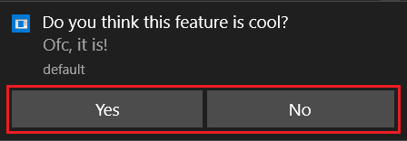
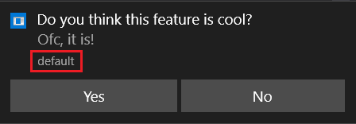

API Documentation¶
Functions¶
-
zroya.init()¶ Initialize Zroya module.
Note: You should call this function before any other manipulation with this module. If you do not call this function explicitely, randomly generated strings will be used as default parameters.
- Args:
app_name (str): Application name.
company_name (str): Part of unique ID created for this application.
product_name (str): Part of unique ID created for this application.
sub_product (str): Part of unique ID created for this application.
str version (str): Part of unique ID created for this application.
- Returns:
- bool: True if initialization is completed, False otherwise.
-
zroya.show()¶ Create instance of notification template and show it. If any of on_* parameter is set, corresponding event is registered. See Callbacks.
- Args:
template (
zroya.Template): Template instance.on_click (callable): Callback for onClick event. Occurs when user activates a toast notification through a click or touch.
on_action (callable): Callback for onAction event. Occurs when user click on action button.
on_dismiss (callable): Callback for onDismiss event. Occurs when the notification leaves the screen, either by expiring or being explicitly dismissed by the user.
on_fail (callable): Callback for onFail event. Occurs when an error is caused when Windows attempts to raise a toast notification.
- Returns:
- bool: Notification ID if notification was shown. False otherwise.
-
zroya.hide()¶ Hide notification by ID. This will trigger onDismiss event.
- Args:
- nid (int): Notification ID obtained from
zroya.show()function. - Returns:
- bool: True if notification was hidden, false otherwise.
Template¶
-
class
zroya.Template¶ Template for any notification you create. You may show any number of notifications based on this template with
zroya.show()method.-
addAction()¶ Add button to notification. User may click it and onAction event is fired up. Each notification got its own ID counting up from zero. This ID is handed back to event handler.
Note: Action is one of “modern” features. Windows 8.1 or newer is required.
Action buttons are highlighted.
- Args:
- label (str): Button’s text.
- Returns:
- int: Index of action.
-
getAttribution()¶ Get attribution text from notification.
Note: Attribution text is one of “modern” features. Windows 8.1 or newer is required.
Attribution text is highlighted.
- Returns:
- str: Attribution text.
-
getAudio()¶ Get notification audio. Audio is a sound played to get user’s attention.
- Returns:
zroya.Audio: Current audio.
-
getAudioMode()¶ Get notification audio mode. It sets how or even if the sound is played.
- Returns:
zroya.AudioMode: Current audio mode.
-
getExpiration()¶ Get expiration time in milliseconds. Expiration time is time before the notification is removed from Action Center. This fires up the onDismiss event with dismiss reason set to
zroya.DismissReason.Expired.Returns:
int: Number of milliseconds or zero for no expiration time.
-
getFirstLine()¶ Get first line of notification text.
- Returns:
- str: First line, or empty string when there is not text to be returned.
-
getImage()¶ Get path to image from notification.
- Returns:
- str: Empty string or path to current template image.
-
getSecondLine()¶ Get second line of notification text.
Note: Third line is not supported by each notification type. See
zroya.TemplateType.- Returns:
- str: Empty string when second line is not set or it is not supported by current template type. Second line text in other cases.
-
getThirdLine()¶ Get third line text.
Note: Third line is not supported by each notification type. See
zroya.TemplateType.- Returns:
- str: Empty string if third line is not supported or empty. In other cases, third line.
-
setAttribution()¶ Set notification’s attribution text.
Note: Attribution text is one of “modern” features. Windows 8.1 or newer is required.
Attribution text is highlighted.
- Args:
- label (str): Attribution text.
- Returns:
- bool: True on success, False otherwise.
-
setAudio()¶ Set audio and playback mode for notification. Audio is a one of predefined system sounds. Audio mode sets how, or even if the sound is played.
- Args:
- audio (int): One of sounds defined in
zroya.Audiomode (int): One of modes available fromzroya.AudioMode. Or leave it empty forzroya.AudioMode.Default. - Returns:
- bool:True if audio was set, false otherwise.
-
setExpiration()¶ Set expiration time in milliseconds. Expiration time is time before the notification is removed from Action Center. This fires up the onDismiss event with dismiss reason set to
zroya.DismissReason.Expired.- Args:
- ms (int): Number of milliseconds for expiration time. Zero means no expiration.
- Returns:
- bool: True for positive value of ms.
-
setFirstLine()¶ Set first line of notification text.
- Args:
- text (str): Text to be set as the first line.
- Raises:
- TypeError: When text is not a string.
- Returns:
- bool: True if first line was set, False on error.
-
setImage()¶ Set path to image used in notification.
Note: Image is not supported by each notification type. See
zroya.TemplateType.- Args:
- path (str): Path to image.
- Raises:
- FileNotFoundError: Image does not exist.
- Returns:
- bool: True is image was set or False for unsupported template type.
-
setSecondLine()¶ Set second line of notification text.
Note: Third line is not supported by each notification type. See
zroya.TemplateType.- Args:
- text (str): Text to be set as the second line.
- Raises:
- TypeError: When text is not a string.
- Returns:
- bool: True if second line is supported by current template type and text was set. False otherwise.
-
setThirdLine()¶ Set third line of notification text.
Note: Third line is not supported by each notification type. See
zroya.TemplateType.- Args:
- text (str): Text to be set as the third line.
- Raises:
- TypeError: When text is not a string.
- Returns:
- bool: True if third line is supported for current type and the text was set. False otherwise.
-
TemplateType¶
-
class
zroya.TemplateType¶ All possible values for
zroya.Templateconstructor.- Example:
zroya.Template(zroya.TemplateType.ImageAndText2)
-
ImageAndText1= 0¶ A large image and a single string wrapped across three lines of text.
-
ImageAndText2= 1¶ A large image, one string of bold text on the first line, one string of regular text wrapped across the second and third lines.
-
ImageAndText3= 2¶ A large image, one string of bold text wrapped across the first two lines, one string of regular text on the third line.
-
ImageAndText4= 3¶ A large image, one string of bold text on the first line, one string of regular text on the second line, one string of regular text on the third line.
-
Text1= 4¶ Single string wrapped across three lines of text.
-
Text2= 5¶ One string of bold text on the first line, one string of regular text wrapped across the second and third lines.
-
Text3= 6¶ One string of bold text wrapped across the first two lines, one string of regular text on the third line.
-
Text4= 7¶ One string of bold text on the first line, one string of regular text on the second line, one string of regular text on the third line.
Audio¶
-
class
zroya.Audio¶ Audio enumeration contains values for accepted values for audio parameter of
zroya.Template.setAudio()method.- Example:
# t is an instance of zroya.Template t.setAudio( audio=zroya.Audio.IM )
-
Alarm= 'ms-winsoundevent:Notification.Looping.Alarm'¶
-
Alarm10= 'ms-winsoundevent:Notification.Looping.Alarm10'¶
-
Alarm2= 'ms-winsoundevent:Notification.Looping.Alarm2'¶
-
Alarm3= 'ms-winsoundevent:Notification.Looping.Alarm3'¶
-
Alarm4= 'ms-winsoundevent:Notification.Looping.Alarm4'¶
-
Alarm5= 'ms-winsoundevent:Notification.Looping.Alarm5'¶
-
Alarm6= 'ms-winsoundevent:Notification.Looping.Alarm6'¶
-
Alarm7= 'ms-winsoundevent:Notification.Looping.Alarm7'¶
-
Alarm8= 'ms-winsoundevent:Notification.Looping.Alarm8'¶
-
Alarm9= 'ms-winsoundevent:Notification.Looping.Alarm9'¶
-
Call= 'ms-winsoundevent:Notification.Looping.Call'¶
-
Call10= 'ms-winsoundevent:Notification.Looping.Call10'¶
-
Call2= 'ms-winsoundevent:Notification.Looping.Call2'¶
-
Call3= 'ms-winsoundevent:Notification.Looping.Call3'¶
-
Call4= 'ms-winsoundevent:Notification.Looping.Call4'¶
-
Call5= 'ms-winsoundevent:Notification.Looping.Call5'¶
-
Call6= 'ms-winsoundevent:Notification.Looping.Call6'¶
-
Call7= 'ms-winsoundevent:Notification.Looping.Call7'¶
-
Call8= 'ms-winsoundevent:Notification.Looping.Call8'¶
-
Call9= 'ms-winsoundevent:Notification.Looping.Call9'¶
-
Default= 'ms-winsoundevent:Notification.Default'¶
-
IM= 'ms-winsoundevent:Notification.IM'¶
-
Mail= 'ms-winsoundevent:Notification.Mail'¶
-
Reminder= 'ms-winsoundevent:Notification.Reminder'¶
AudioMode¶
-
class
zroya.AudioMode¶ AudioMode is enumeration holds all valid parameters accepted by
zroya.Template.setAudio()method’s mode parameter.- Example:
# t is an instance of zroya.Template t.setAudio( mode=zroya.AudioMode.Silence )
-
Default= 0¶ Selected audio will be played only once.
-
Loop= 2¶ Play audio in loop until it is moved to Action Center. This time may vary due to different user configuration.
-
Silence= 1¶ No audio is played at all.
DismissReason¶
-
class
zroya.DismissReason(reason)¶ This class represents a notification dismiss reason. It is passed to callback registered in on_dismiss parameter of
zroya.show()function.You can print it to get a reason description or compare it with any of following attributes.
-
App= 1¶ The application hid the toast using
zroya.hide().
-
Expired= 2¶ The toast has expired.
-
User= 0¶ The user dismissed the toast.
-